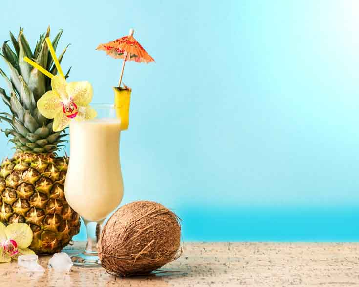
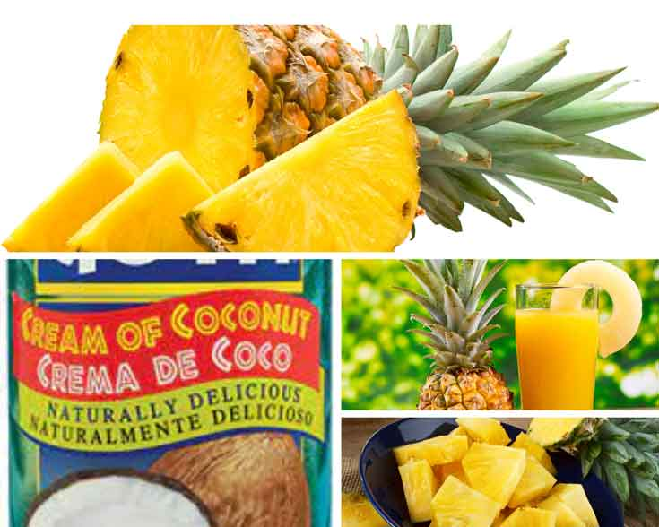

<div class="container" style="width: 80%;margin-top: 64px;max-width: 1080px;margin-bottom: 100px;">
    <div class="row">
        <div class="col col-12 col-md-9">
            <div class="artcont">
                <h1 class="articletitle">PLANTAINS! A STAPLE FOOD IN LATIN AMERICA’S COUSINE</h1><span
                    class="artdata">by admin | Jul 14, 2022 | Uncategorized | 0 comments</span>

                <p><span style="font-size: 14px;">The piña colada is a popular
                        cocktail originated in Puerto Rico and made with pineapple juice, rum, and coconut, and
                        served blended or with crushed ice. The name means “strained pineapple” in Spanish. The
                        original drink was created in San Juan in 1954 by a bartender named Ramón “Monchito”
                        Marrero. It became an instant favorite and was declared the official drink of Puerto Rico in
                        1978.</span></p>
                <p><span style="font-size: 14px;">Today, we are sharing a recipe of Virgin Pina Colada (without
                        rum). It’s a summer favorite drink for the whole family to enjoy! Make sure to stop by
                        Riverview Fresh Market, your favorite Latin Market to get all the ingredients:</span></p>
                <p><strong style="font-size: 14px;">Fresh Pineapple:</strong><span style="font-size: 14px;"> This is
                        what makes this drink taste amazing! and also what we use for garnishing the drink. We carry
                        both, the whole pineapple or fresh cut in a container.</span></p>
                <p><strong style="font-size: 14px;">Cream of Coconut:</strong><span style="font-size: 14px;"> This
                        is a key ingredient, please don’t substitute.</span></p>
                <p><strong>Pineapple Juice:</strong> This gives the drink its tropical taste.</p>
                <p><strong>Crushed Ice:</strong> This is what makes the drink have a nice texture.</p>
                <p style="text-align: center;"><strong><a
                            href="https://riverviewfreshmarkets.mybcard.net/contact-2/#map"></a></strong></p>


                


                <p><strong>Ingredients:</strong><br>  ¼ cup fresh pineapple chunks<br>  1 cup pineapple juice<br>
                     ¼ cup cream of coconut<br>  1 cup crushed ice</p>
                <p><strong>&nbsp;<span>Recipe:</span></strong></p>
                <ol>
                    <li><span>Start with the fresh pineapple. Chop it into small pieces, keeping some of the
                            fronds and peel to use as a garnish if desired.</span></li>
                    <li>lace the fresh fruit, juice, and the cream of coconut in a blender. Make sure the cream of
                        coconut is shaken or stirred well before adding to the blender.</li>
                    <li>Add the crushed ice last.</li>
                    <li>Put the lid on and blend until smooth.</li>
                    <li>Pour into a hurricane glass and add your garnish of choice. You may use fronds, fruit,
                        umbrellas, and bamboo pick</li>
                </ol>
                <p>Serve and enjoy with your loved ones! Since this drink has no alcohol, it is sure to be a family
                    favorite! Bring in the kids, and let the taste begin!</p>
                <p><strong>Don’t forget to stop by Riverview Fresh Market, your favorite Latin Market and include in
                        your shopping list all the ingredients for your Piña Colada! <a
                            href="https://riverviewfreshmarkets.mybcard.net/contact-2/#map">Visit Us!</a></strong>
                </p>


            </div>
        </div>
        <div class="col col-12 col-md-3 recentcol">
            <h1>Recent post</h1>
            <app-menuarticles></app-menuarticles>
            
        </div>
    </div>
</div>